Sala completa

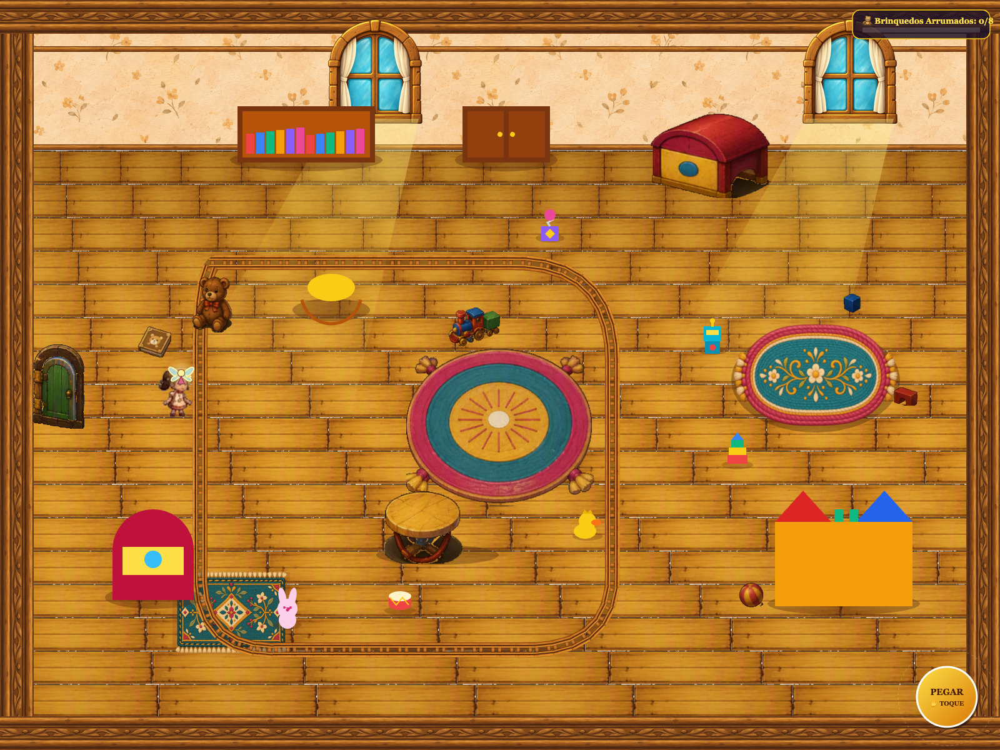

Poltrona, cavalinho, Coelhinho e legibilidade do HUD. Notas B na avaliação interna. Grupos de prioridade alta aguardam aprovação.
Relatório completo e limites da validação
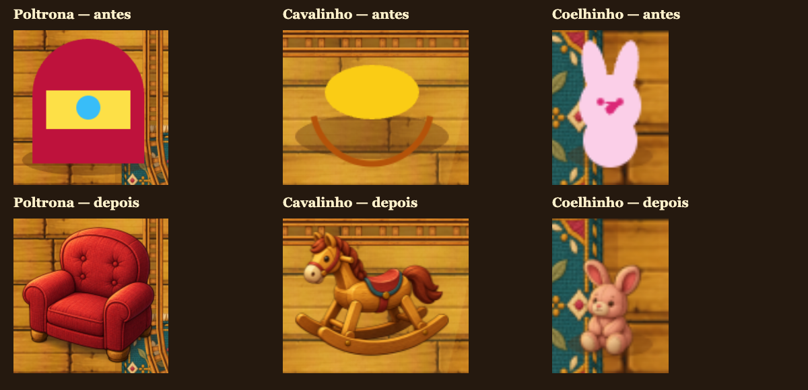
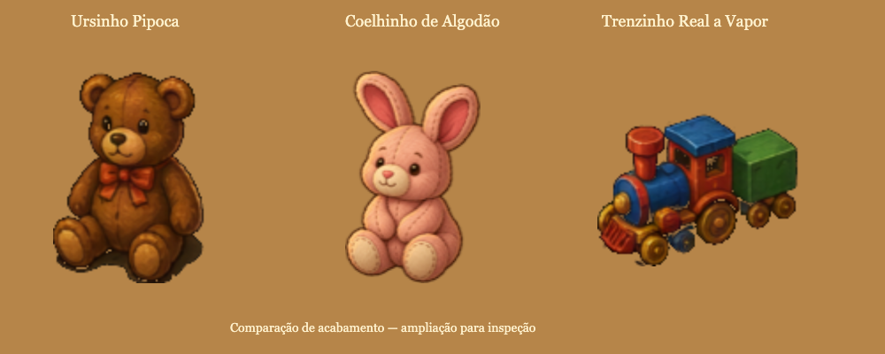

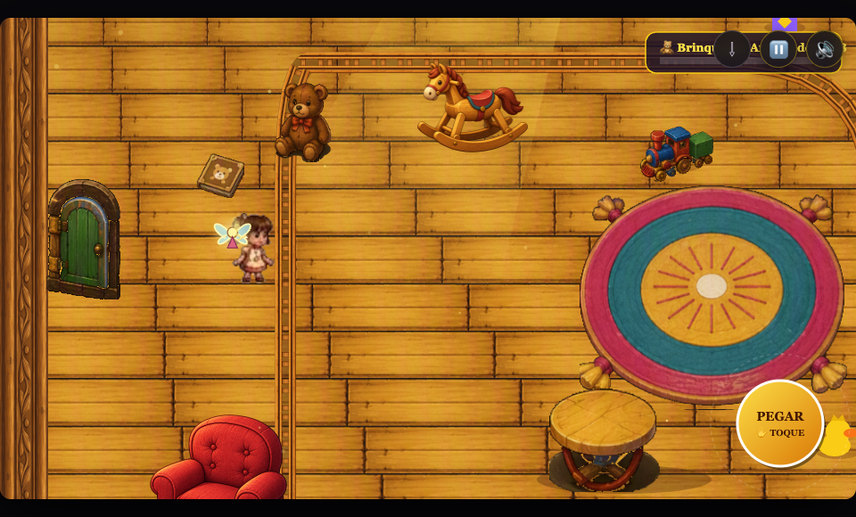
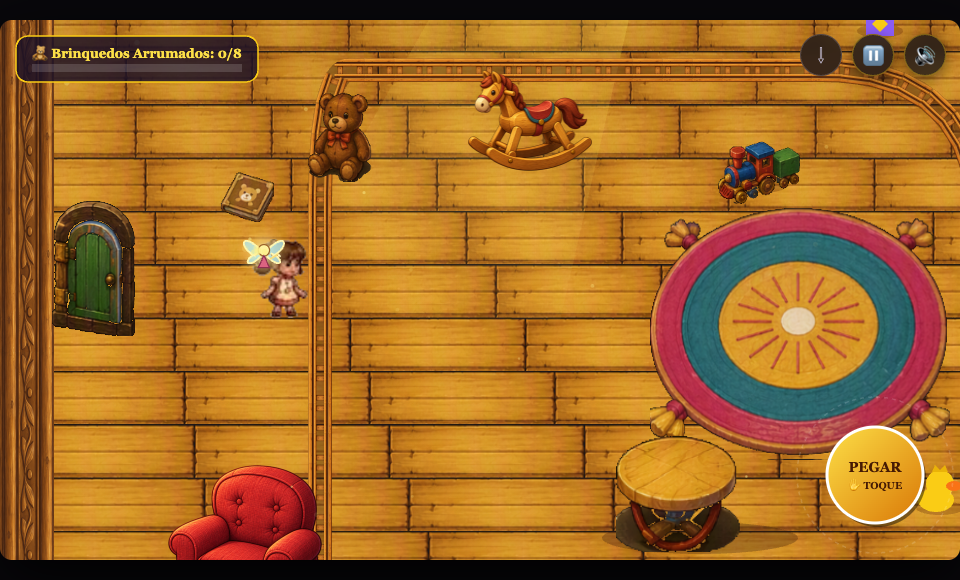
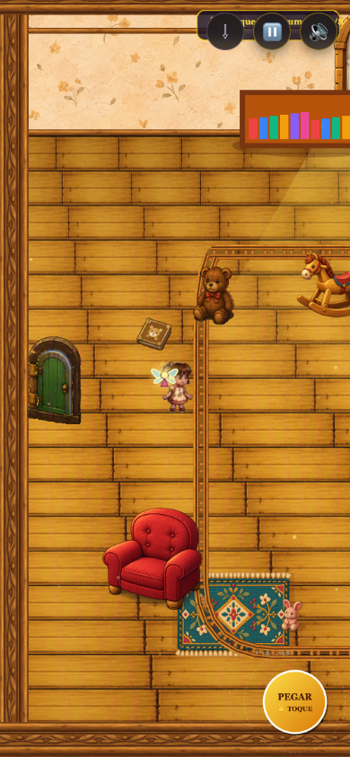
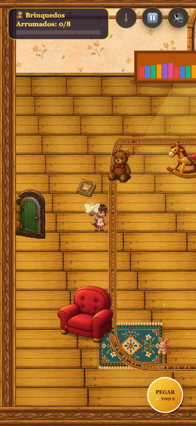
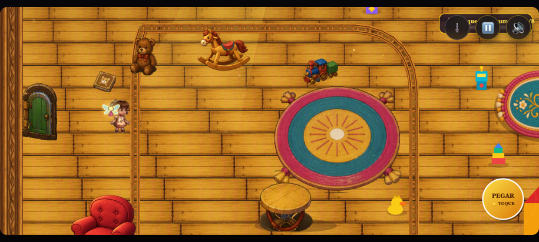
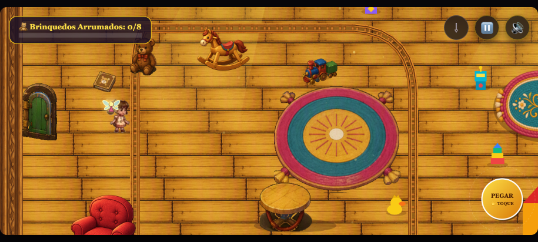
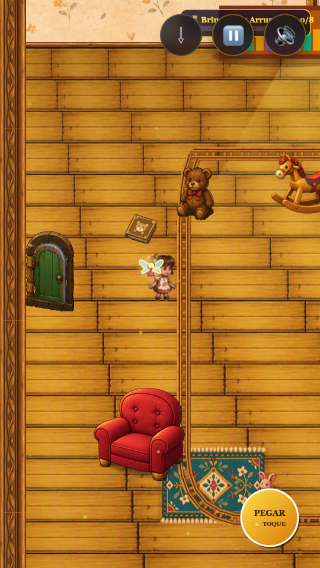
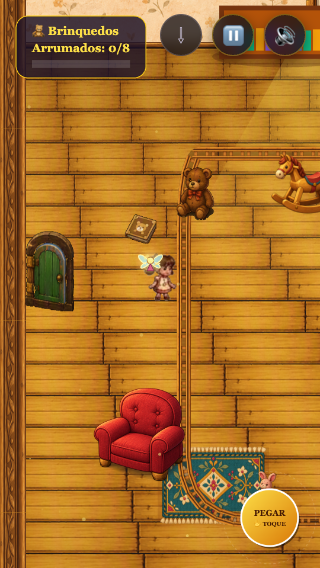
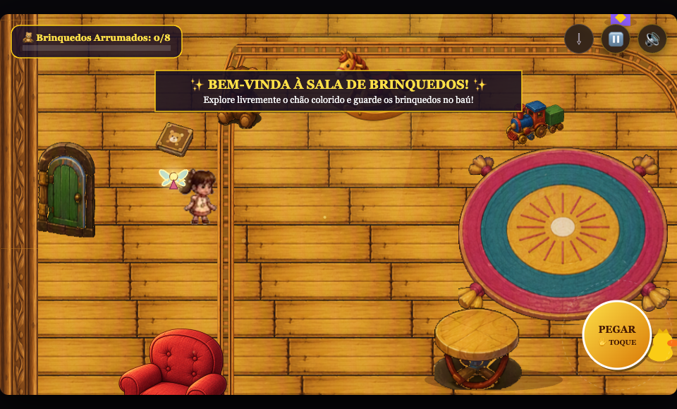
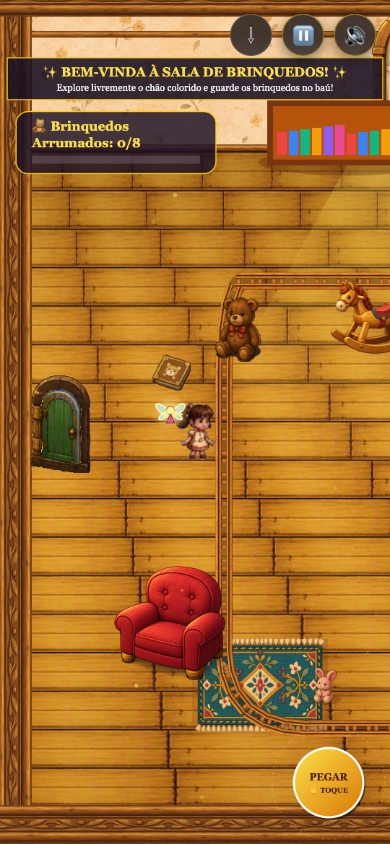
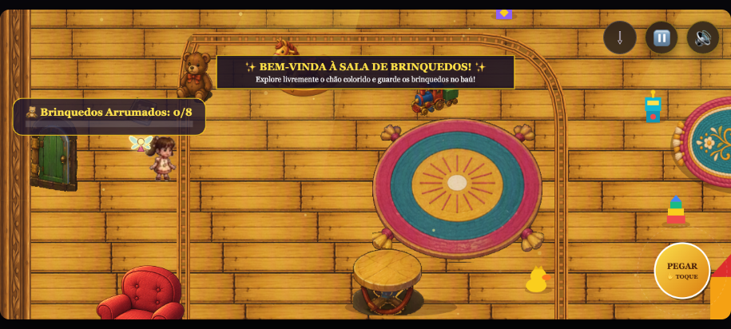
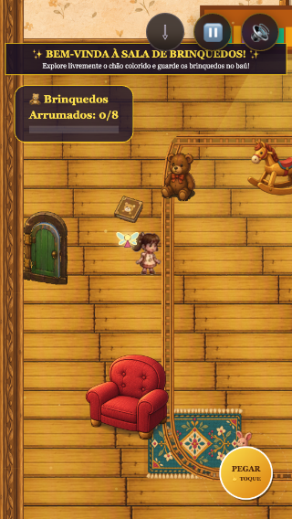